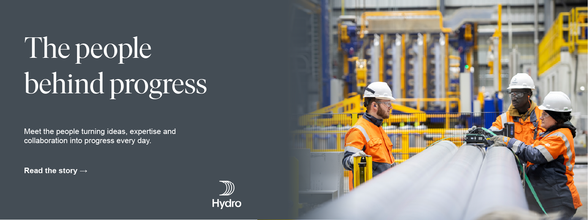
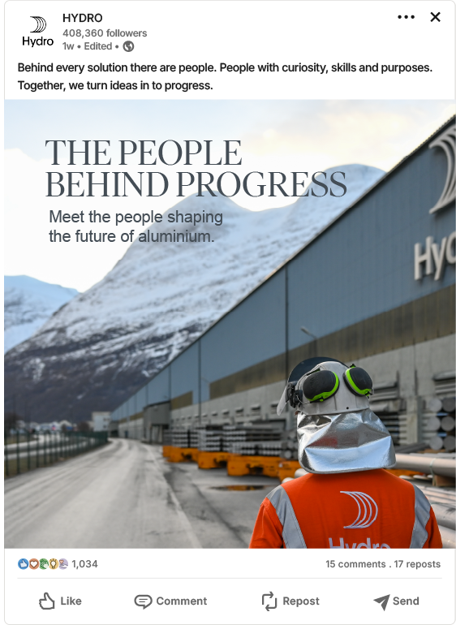
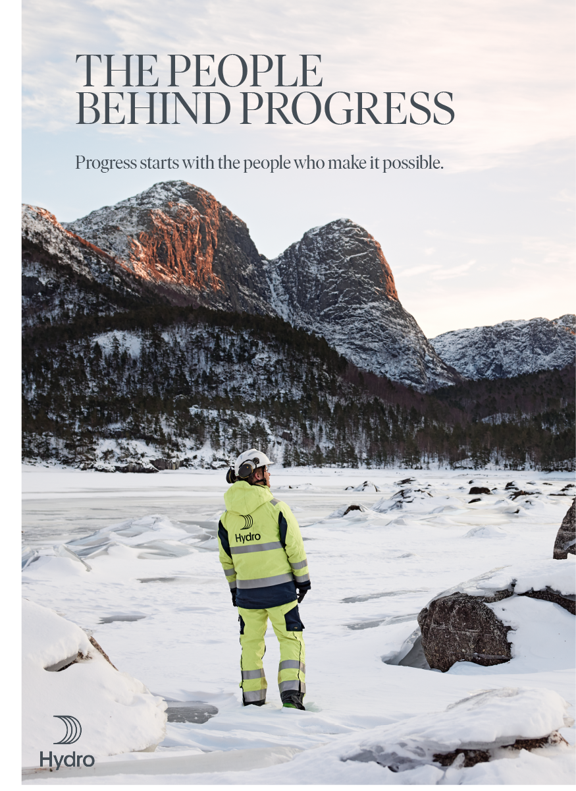

Partire dalla storia umana.
I dipendenti diventano la voce concreta di competenza, esperienza, responsabilità e cambiamento.
Il concept è stato sviluppato come un sistema di comunicazione per Hydro incentrato sulle persone, mettendo in primo piano chi rende possibile il progresso industriale, non soltanto la tecnologia.
L’obiettivo era restituire un’immagine più umana, credibile e contemporanea di una grande realtà industriale, mantenendo un linguaggio visivo coerente e misurato.
I dipendenti diventano la voce concreta di competenza, esperienza, responsabilità e cambiamento.
La campagna collega il contributo individuale a uno scopo industriale e ambientale più ampio.
L’innovazione viene raccontata come il risultato del lavoro delle persone, non come una promessa corporate astratta.
Il sistema di headline è volutamente semplice e diretto. Dà alla campagna una forte voce editoriale, lasciando alla fotografia e alle storie dei dipendenti il compito di sostenere la componente emotiva.
Headline serif di grande formato introducono calore e autorevolezza senza rompere il tono corporate.
Gli ambienti di lavoro reali restano visibili, così la campagna risulta credibile e non eccessivamente patinata.
I lavoratori sono rappresentati come protagonisti, dando priorità visiva alle persone anziché ai macchinari.
Il sistema è stato progettato per adattarsi ai social media, ai materiali di campagna e alla comunicazione di grande formato.

La declinazione social mantiene il messaggio immediato, leggibile e centrato sulle persone, adattandosi al formato di un feed professionale.


Il poster di grande formato amplia la campagna attraverso una composizione più cinematografica, in cui ambiente e persona contribuiscono insieme al racconto.
Ho definito la narrazione centrale attorno alle persone che rendono possibile il progresso industriale.
Ho definito l’equilibrio tra tipografia editoriale, rigore corporate e fotografia umana.
Ho creato un’architettura di messaggio concisa, capace di funzionare su diversi formati di comunicazione.
Ho tradotto la campagna in key visual, social e poster mantenendo un’identità coerente.